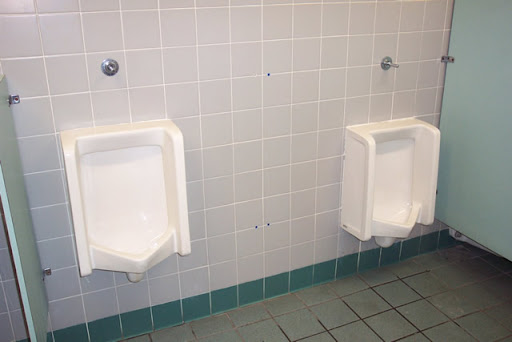

The Potty Masters of Potenger
Trail of Stolen Urinals Leads to Surprising Culprits
By William and Jacob
A break in the case of the missing urinals has brought some relief to Renaissance, according to head custodian Will Cleanit.
“I’ve been here for a few years now and we are in a new world this fall,” he said. “It has been nothing but trouble since this Tok-tok challenge. I’ve had to buy and install all kinds of bathroom equipment, and even redo the plumbing. Finally, they caught those punks. I hope they get what they deserve!”
Vandalism from TikTok’s "devious lick challenge" seemed to die down recently after punishments were given to students for stealing soap dispensers and hand sanitizers from their own schools. But recent disappearing wall fixtures like water fountains raised suspicions. Security cameras placed in Renaissance bathrooms last night revealed students in Pottinger uniforms stealing a urinal.
The video footage revealed that 2nd grade Pottenger school students had been stealing all sorts of equipment from bathrooms, including most recently urinals. Pottinger security guards used footage to catch the ten criminals. “They were both wearing hoodies, so it was hard to identify them,” said one guard who asked not to be named.
“I guess when their own school security cracked down, they began terrorizing their neighbors,” added Cleanit. The students had begun with soap dispensers and hand sanitizers from their own schools, but security cracked down. By raiding other schools, they assumed that if they get caught the other school can’t punish them unless they get in touch with their own school, which would protect them.
They were not far wrong. Pottinger Elementary School students have a reputation for bathroom exploits: “Our students all learn to master their bathroom needs by Kindergarten,” bragged Principal Sandy Sewer. “That’s why we call ourselves ‘potty masters.’ I guess some of our kiddos took this too far. But I am proud of them,” she bragged.
There are lots of others that have be doing this, not just the Pottenger 2nd graders students: see What is the ‘devious lick’ TikTok trend? What does it mean? Here’s what to know (nj.com).The trend has some of the teachers and parents worried.
The students have been directed to give the urinals back or face juvenile detention. In addition, the childrens’ parents have been asked to pay for the damages.